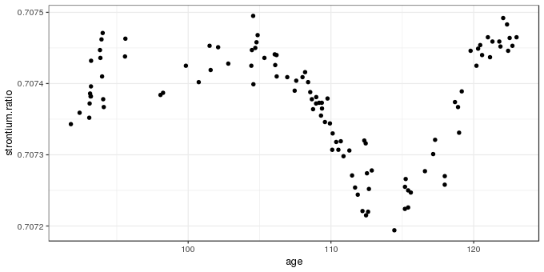
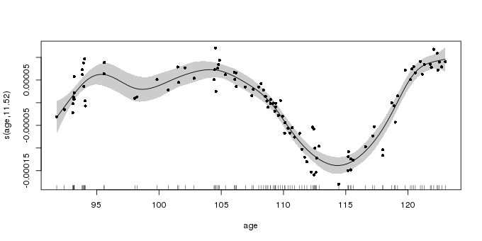
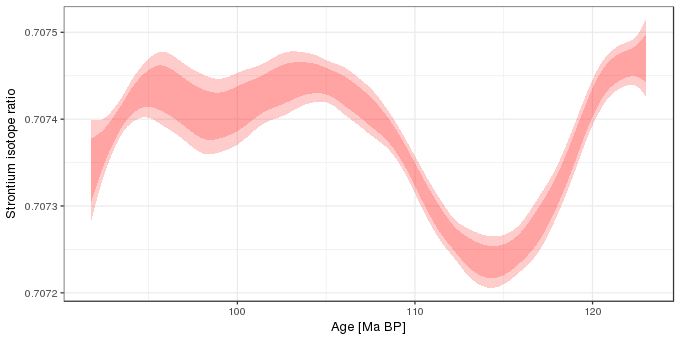
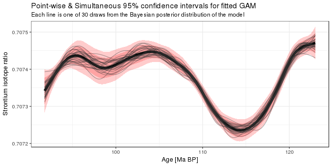

Simultaneous intervals for smooths revisited
correcting a silly mistake
Posted in
Tagged
GAM models simultaneous intervals splines smoothers Bayesian confidence intervals
Blogroll
Eighteen months ago I wrote a post in which I described the use of simulation from the posterior distribution of a fitted GAM to derive simultaneous confidence intervals for the derivatives of a penalised spline. It was a nice post that attracted some interest. It was also wrong. I have no idea what I was thinking when I thought the intervals described in that post were simultaneous. Here I hope to rectify that past mistake.
I’ll tackle the issue of simultaneous intervals for the derivatives of penalised spline in a follow-up post. Here, I demonstrate one way to compute a simultaneous interval for a penalised spline in a fitted GAM. As example data, I’ll use the strontium isotope data set included in the SemiPar package, and which is extensively analyzed in the monograph Semiparametric Regression (Ruppert et al., 2003). First, load the packages we’ll need as well as the data, which is data set fossil. If you don’t have SemiPar installed, install it using install.packages("SemiPar") before proceeding
library("mgcv")
library("ggplot2")
theme_set(theme_bw())
data(fossil, package = "SemiPar")The fossil data set includes two variables and is a time series of strontium isotope measurements on samples from a sediment core. The data are shown below using ggplot()
ggplot(fossil, aes(x = age, y = strontium.ratio)) +
geom_point()
The aim of the analysis of these data is to model how the measured strontium isotope ratio changed through time, using a GAM to estimate the clearly non-linear change in the response. I won’t cover how the GAM is fitted and what all the options are here, but a reasonable GAM for these data is fitted using mgcv and gam()
m <- gam(strontium.ratio ~ s(age, k = 20), data = fossil, method = "REML")The essentially arbitrary default for k, the basis dimension of the spline, is changed to 20 as there is a modest amount of non-linearity in the strontium isotopes ratio time series. By using method = "REML", the penalised spline model is expressed as a linear mixed model with the wiggly bits of the spline treated as random effects, and is estimated using restricted maximum likelihood; method = "ML" would also work here.
The fitted model uses ~12 effective degrees of freedom (which wouldn’t have been achievable with the default of k = 10!)
summary(m)Family: gaussian
Link function: identity
Formula:
strontium.ratio ~ s(age, k = 20)
Parametric coefficients:
Estimate Std. Error t value Pr(>|t|)
(Intercept) 7.074e-01 2.435e-06 290527 <2e-16 ***
---
Signif. codes: 0 '***' 0.001 '**' 0.01 '*' 0.05 '.' 0.1 ' ' 1
Approximate significance of smooth terms:
edf Ref.df F p-value
s(age) 11.52 13.88 62.07 <2e-16 ***
---
Signif. codes: 0 '***' 0.001 '**' 0.01 '*' 0.05 '.' 0.1 ' ' 1
R-sq.(adj) = 0.891 Deviance explained = 90.3%
-REML = -932.05 Scale est. = 6.2839e-10 n = 106
The fitted spline captures the main variation in strontium isotope ratio values; the output from plot.gam() is shown below
plot(m, shade = TRUE, seWithMean = TRUE, residuals = TRUE, pch = 16, cex = 0.8)
plot.gam()The confidence interval shown around the fitted spline is a 95% Bayesian credible interval. For reasons that don’t need to concern us right now, this interval has a surprising frequentist interpretation as a 95% “across the function” interval (Marra and Wood, 2012; Nychka, 1988); under repeated resampling from the population 95% of such confidence intervals will contain the true function. Such “across the function” intervals are quite intuitive, but, as we’ll see shortly, they don’t reflect the uncertainty in the fitted function; far fewer than 95% of splines drawn from the posterior distribution of the fitted GAM would lie within the confidence interval shown in the plot above.
How to compute a simultaneous interval for a spline is a well studied problem and a number of solutions have been proposed in the literature. Here I follow Ruppert et al. (2003) and use a simulation-based approach to generate a simultaneous interval. We proceed by considering a simultaneous confidence interval for a function \(f(x)\) at a set of \(M\) locations in \(x\); we’ll refer to these locations, following the notation of Ruppert et al. (2003) by
\[ \mathbf{g} = (g_1, g_2, \ldots, g_M) \]
The true function over \(\mathbf{g}\), \(\mathbf{f_g}\), is defined as the vector of evaluations of \(f\) at each of the \(M\) locations
\[ \begin{align} \mathbf{f_g} &\equiv \begin{bmatrix} f(g_1) \\ f(g_2) \\ \vdots \\ f({g_M}) \\ \end{bmatrix} \end{align} \]
and the corresponding estimate of the true function given by the fitted GAM as \(\mathbf{\hat{f}_g}\). The difference between the true function and our unbiased estimator is given by
\[ \begin{align} \mathbf{\hat{f}_g} - \mathbf{f_g} &= \mathbf{C_g} \begin{bmatrix} \boldsymbol{\hat{\beta}} - \boldsymbol{\beta} \\ \mathbf{\hat{u}} - \mathbf{u} \\ \end{bmatrix} \end{align} \]
where \(\mathbf{C_g}\) is the evaluation of the basis functions at the locations \(\mathbf{g}\), and the thing in square brackets is the bias in the estimated model coefficients, which we assume to be mean 0 and follows, approximately, a multivariate normal distribution with mean vector \(\mathbf{0}\) and covariance matrix \(\mathbf{V_b}\)
\[ \begin{bmatrix} \boldsymbol{\hat{\beta}} - \boldsymbol{\beta} \\ \mathbf{\hat{u}} - \mathbf{u} \\ \end{bmatrix} \stackrel{\text{approx.}}{\sim} N \left (\mathbf{0}, \mathbf{V_b} \right ) \]
Having got those definitions out of the way, the 100(1 - \(\alpha\))% simultaneous confidence interval is
\[ \begin{align} \mathbf{\hat{f}_g} &\pm m_{1 - \alpha} \begin{bmatrix} \widehat{\mathrm{st.dev}} (\hat{f}(g_1) - f(g_1)) \\ \widehat{\mathrm{st.dev}} (\hat{f}(g_2) - f(g_2)) \\ \vdots \\ \widehat{\mathrm{st.dev}} (\hat{f}(g_M) - f(g_M)) \\ \end{bmatrix} \end{align} \]
where \(m_{1 - \alpha}\) is the 1 - \(\alpha\) quantile of the random variable
\[ \sup_{x \in \mathcal{x}} \left | \frac{\hat{f}(x) - f(x)}{\widehat{\mathrm{st.dev}} (\hat{f}(x) - f(x))} \right | \approx \max_{1 \leq \ell \leq M} \left | \frac{\left ( \mathbf{C_g} \begin{bmatrix} \boldsymbol{\hat{\beta}} - \boldsymbol{\beta} \\ \mathbf{\hat{u}} - \mathbf{u} \\ \end{bmatrix} \right )_\ell}{\widehat{\mathrm{st.dev}} (\hat{f}(g_{\ell}) - f(g_{\ell}))} \right | \]
Yep, that was exactly my reaction when I first read this section of Ruppert et al. (2003)!
Let’s deal with the left-hand side of the equation first. The \(\sup\) refers to the supremum or the least upper bound; this is the least value of \(\mathcal{X}\), the set of all values of which we observed subset \(x\), that is greater than all of the values in the subset. Often this is the maximum value of the subset. This is what is indicated by the right-hand side of the equation; we want the maximum (absolute) value of the ratio over all values in \(\mathbf{g}\).
The fractions in both sides of the equation correspond to the standardized deviation between the true function and the model estimate, and we consider the maximum absolute standardized deviation. We don’t usually know the distribution of the maximum absolute standardized deviation but we need this to access its quantiles. However, we can closely approximate the distribution via simulation. The difference here is that rather than simulating from the posterior of the model as we have done in earlier posts on this blog, this time we simulate from the multivariate normal distribution with mean vector \(\mathbf{0}\) and covariance matrix \(\mathbf{V_{b}}\), the Bayesian covariance matrix of the fitted model. For each simulation we find the maximum absolute standardized deviation of the fitted function from the true function over the grid of \(x\) values we are considering. Then we collect all these maxima, sort them and either take the 1 - \(\alpha\) probability quantile of the maxima, or the maximum with rank \(\lceil (1 - \alpha) / N \rceil\).
OK, that’s enough of words and crazy equations. Implementing this in R is going to be easier than those equations might suggest. I’ll run through the code we need line by line. First we define a simple function to generate random values from a multivariate normal: this is in the manual for mgcv and saves us loading another package just for this:
rmvn <- function(n, mu, sig) { ## MVN random deviates
L <- mroot(sig)
m <- ncol(L)
t(mu + L %*% matrix(rnorm(m*n), m, n))
}Next we extract a few things that we need from the fitted GAM
Vb <- vcov(m)
newd <- with(fossil, data.frame(age = seq(min(age), max(age), length = 200)))
pred <- predict(m, newd, se.fit = TRUE)
se.fit <- pred$se.fitThe first is the Bayesian covariance matrix of the model coefficients, \(\mathbf{V_b}\). This \(\mathbf{V_b}\) is conditional upon the smoothing parameter(s). If you want a version that adjusts for the smoothing parameters being estimated rather than known values, add unconditional = TRUE to the vcov() call. Second, we define our grid of \(x\) values over which we want a confidence band. Then we generate predictions and standard errors from the model for the grid of values. The last line just extracts out the standard errors of the fitted values for use later.
Now we are ready to generate simulations of the maximum absolute standardized deviation of the fitted model from the true model. We set the pseudo-random seed to make the results reproducible and specify the number of simulations to generate.
set.seed(42)
N <- 10000Next, we want N draws from \(\begin{bmatrix}
\boldsymbol{\hat{\beta}} - \boldsymbol{\beta} \\
\mathbf{\hat{u}} - \mathbf{u} \\
\end{bmatrix}\), which is approximately distributed multivariate normal with mean vector \(\mathbf{0}\) and covariance matrix Vb
BUdiff <- rmvn(N, mu = rep(0, nrow(Vb)), sig = Vb)Now we calculate \(\hat{f}(x) - f(x)\), which is given by \(\mathbf{C_g} \begin{bmatrix} \boldsymbol{\hat{\beta}} - \boldsymbol{\beta} \\ \mathbf{\hat{u}} - \mathbf{u} \\ \end{bmatrix}\) evaluated at the grid of \(x\) values
Cg <- predict(m, newd, type = "lpmatrix")
simDev <- Cg %*% t(BUdiff)The first line evaluates the basis function at \(\mathbf{g}\) and the second line computes the deviations between the fitted and true parameters. Then we find the absolute values of the standardized deviations from the true model. Here we do this in a single step for all simulations using sweep()
absDev <- abs(sweep(simDev, 1, se.fit, FUN = "/"))The maximum of the absolute standardized deviations at the grid of \(x\) values for each simulation is computed via an apply() call
masd <- apply(absDev, 2L, max)The last step is to find the critical value used to scale the standard errors to yield the simultaneous interval; here we calculate the critical value for a 95% simultaneous confidence interval/band
crit <- quantile(masd, prob = 0.95, type = 8)The critical value estimated above is 3.205. Intervals generated using this value will be 1.6 times larger than the point-wise interval shown above.
Now that we have the critical value, we can calculate the simultaneous confidence interval. In the code block below I first add the grid of values (newd) to the fitted values and standard errors at those new values and then augment this with upper and lower limits for a 95% simultaneous confidence interval (uprS and lwrS), as well as the usual 95% point-wise intervals for comparison (uprP and lwrP). Then I plot the two intervals:
pred <- transform(cbind(data.frame(pred), newd),
uprP = fit + (2 * se.fit),
lwrP = fit - (2 * se.fit),
uprS = fit + (crit * se.fit),
lwrS = fit - (crit * se.fit))
ggplot(pred, aes(x = age)) +
geom_ribbon(aes(ymin = lwrS, ymax = uprS), alpha = 0.2, fill = "red") +
geom_ribbon(aes(ymin = lwrP, ymax = uprP), alpha = 0.2, fill = "red") +
labs(y = "Strontium isotope ratio",
x = "Age [Ma BP]")
Finally, I’m going to look at the coverage properties of the interval we just created, which is something I should have done in the older post as it would have shown, as we’ll see, that the old interval I wrote about wasn’t even close to having the correct coverage properties.
Start by drawing a large sample from the posterior distribution of the fitted model. Note that this time, we’re simulating from a multivariate normal with mean vector given by the estimated model coefficients
sims <- rmvn(N, mu = coef(m), sig = Vb)
fits <- Cg %*% t(sims)fits now contains N = 104 draws from the model posterior. Before we look at how many of the 104 samples from the posterior are entirely contained within the simultaneous interval, choose 30 at random and stack them in so-called tidy form for use with ggplot()
nrnd <- 30
rnd <- sample(N, nrnd)
stackFits <- stack(as.data.frame(fits[, rnd]))
stackFits <- transform(stackFits, age = rep(newd$age, length(rnd)))What we’ve done in this post can be summarized in the figure below
ggplot(pred, aes(x = age, y = fit)) +
geom_ribbon(aes(ymin = lwrS, ymax = uprS), alpha = 0.2, fill = "red") +
geom_ribbon(aes(ymin = lwrP, ymax = uprP), alpha = 0.2, fill = "red") +
geom_path(lwd = 2) +
geom_path(data = stackFits, mapping = aes(y = values, x = age, group = ind),
alpha = 0.4, colour = "grey20") +
labs(y = "Strontium isotope ratio",
x = "Age [Ma BP]",
title = "Point-wise & Simultaneous 95% confidence intervals for fitted GAM",
subtitle = sprintf("Each line is one of %i draws from the Bayesian posterior distribution of the model", nrnd))
It shows the fitted model and the 95% simultaneous and point-wise confidence intervals, and is augmented with 30 draws from the posterior distribution of the GAM. As you can see, many of the lines lie outside the point-wise confidence interval. The situation is quite different with the simultaneous interval; only a couple of the posterior draws go outside of the 95% simultaneous interval, which is what we’d expect for a 95% interval. So that’s encouraging!
As a final check we’ll look at the proportion of all the posterior simulations that lie entirely within the simultaneous interval. To facilitate this we create a little wrapper function, inCI(), which returns TRUE if all the evaluation points \(\mathbf{g}\) lie within the stated interval and FALSE otherwise. This is then applied to each posterior simulation (column of fits) and we do this for the simultaneous intervals and the point-wise version. The final two lines work out what proportion of the posterior simulations lie within the two confidence intervals.
inCI <- function(x, upr, lwr) {
all(x >= lwr & x <= upr)
}
fitsInPCI <- apply(fits, 2L, inCI, upr = pred$uprP, lwr = pred$lwrP)
fitsInSCI <- apply(fits, 2L, inCI, upr = pred$uprS, lwr = pred$lwrS)
sum(fitsInPCI) / length(fitsInPCI) # Point-wise
sum(fitsInSCI) / length(fitsInSCI) # Simultaneous[1] 0.3028
[1] 0.9526
As you can see, the point-wise confidence interval includes just a small proportion of the posterior simulations, but the simultaneous interval contains approximately the right number of simulations for a 95% interval.
So how bad are the intervals I created in the old post? They should as bad as the 95% point-wise interval, and they are
oldCI <- apply(fits, 1L, quantile, probs = c(0.025, 0.975))
pred <- transform(pred, lwrOld = oldCI[1, ], uprOld = oldCI[2, ])
fitsInOldCI <- apply(fits, 2L, inCI, upr = pred$uprOld, lwr = pred$lwrOld)
sum(fitsInOldCI) / length(fitsInOldCI)[1] 0.2655
So, there we have it — a proper 95% simultaneous confidence interval for a penalised spline. Now I just need to go back to that old post and strike out all reference to simultaneous…
Social